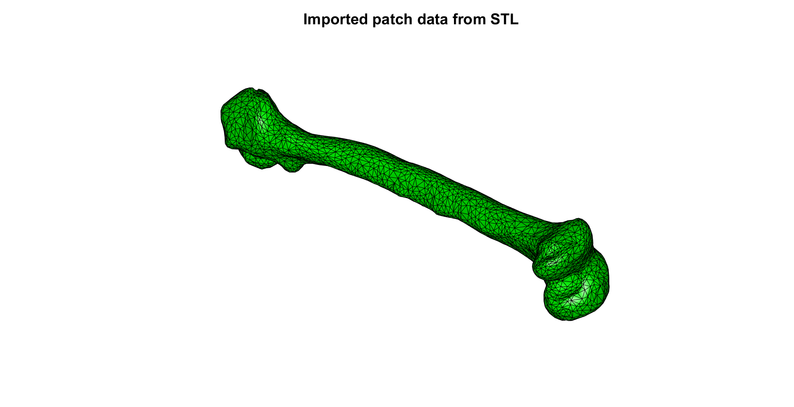

import_STL_txt
Below is a demonstration of the features of the import_STL_txt function
Contents
Syntax
[stlStruct] = import_STL_txt(fileName);
Description
Use import_STL_txt to import .txt type (as apposed to binary) STL files. The function supports multi-solid STL.
Examples
clear; close all; clc;
Plot settings
faceAlpha1=1; faceAlpha2=0.5; fontSize=25;
Import STL file as patch data
%Set main folder defaultFolder = fileparts(mfilename('fullpath')); pathName=fullfile(defaultFolder,'data','STL'); fileName=fullfile(pathName,'femur.stl'); % fileName=fullfile(pathName,'Panthera_pardus_AMNH11374.stl'); [stlStruct] = import_STL_txt(fileName); F=stlStruct.solidFaces{1}; V=stlStruct.solidVertices{1};
Merging nodes example
[~,ind1,ind2]=unique(pround(V,5),'rows');
V=V(ind1,:);
F=ind2(F);
Plotting the model
cFigure; title('Imported patch data from STL','fontSize',fontSize); xlabel('X','fontSize',fontSize);ylabel('Y','fontSize',fontSize); zlabel('Z','fontSize',fontSize); hold on; patch('Faces',F,'Vertices',V,'FaceColor','g','EdgeColor','k','FaceAlpha',faceAlpha1); view(3); axis equal; axis tight; axis vis3d; grid on; camlight('headlight'); lighting phong; axis off; drawnow;
Importing a multi-solid STL file as patch data
%Set main folder defaultFolder = fileparts(mfilename('fullpath')); pathName=fullfile(defaultFolder,'data','STL'); fileName=fullfile(pathName,'stanford_bunny_multi.stl'); [stlStruct] = import_STL_txt(fileName);
Plotting the models
pColors=autumn(numel(stlStruct.solidNames)); cFigure; title('Imported patch data from multi-solid STL','fontSize',fontSize); xlabel('X','fontSize',fontSize);ylabel('Y','fontSize',fontSize); zlabel('Z','fontSize',fontSize); hold on; for q=1:1:numel(stlStruct.solidNames) F=stlStruct.solidFaces{q}; V=stlStruct.solidVertices{q}; patch('Faces',F,'Vertices',V,'FaceColor',pColors(q,:),'EdgeColor','k','FaceAlpha',faceAlpha2); end view(3); axis equal; axis tight; axis vis3d; grid on; camlight('headlight'); lighting phong; axis off; drawnow;


GIBBON www.gibboncode.org
Kevin Mattheus Moerman, gibbon.toolbox@gmail.com